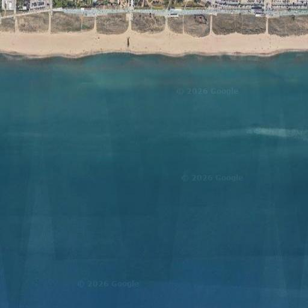

← Tornar
Avui Regu ?
— Sitges —
×
Vent actual al CNS
--
--
Mitjana 10m
--
kn
Ratxa
--
kn
--
Totes les dades →
👁️
Webcams
Webcam Nàutic
Platja del club
● En directe
Vista Llevant
Des del Calipolis
● En directe
Vista S/SE
Des de l'Església
● En directe
🌦️
Previ i Estacions Meteo
Windguru Sitges
Pronòstic AROME-FR 1.3km
Windguru
Estació Meteo CNS
Vent, temp, pressió
WeatherCloud

Vent Castelldefels
Vent en temps real
17nudos
🏆
Regates
Regu
Classificació regates
Google Sheets
Estela
Cerca Regularitat
estela.co
Reglament de Regates
RRS 2025-2028
PDF